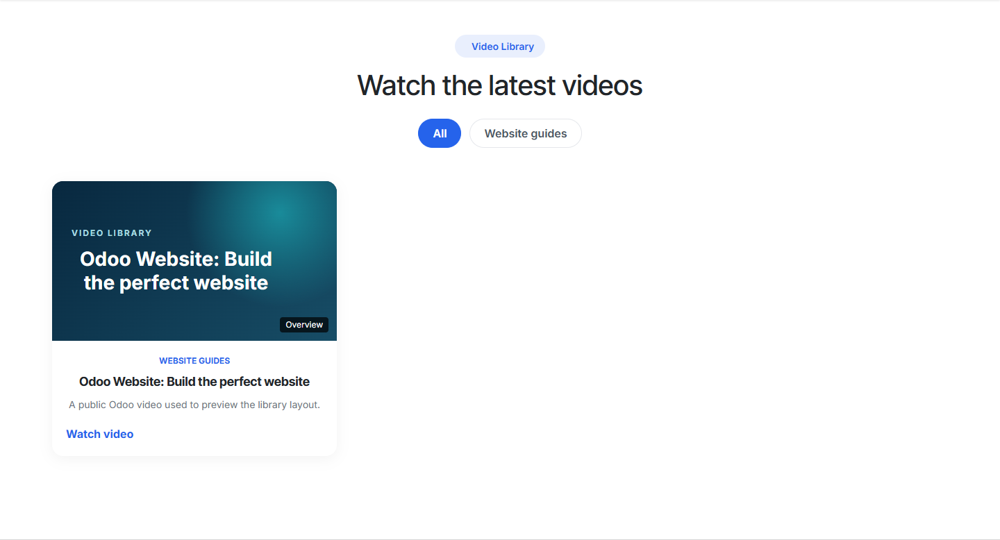
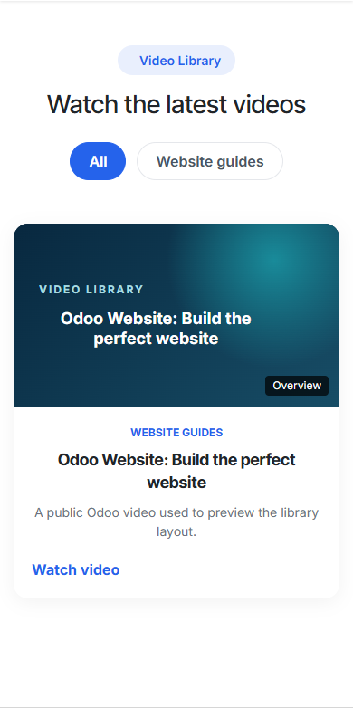

ERPCloud Video Library
Organize published YouTube videos in a clean website library.
Included
- Video records with categories, tags and featured status
- YouTube URL validation and a branded thumbnail fallback
- Responsive standalone page and website snippet with category filters
Real Odoo 20 screenshots


Requires standard website, mail and portal apps. LGPL-3. Support: info@erpcloud.vn.